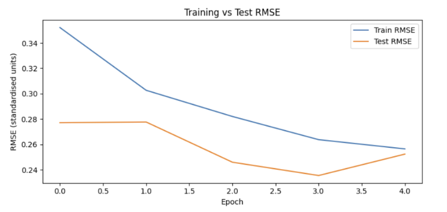
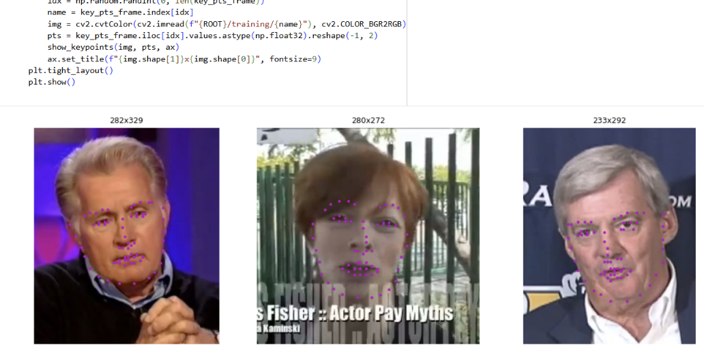
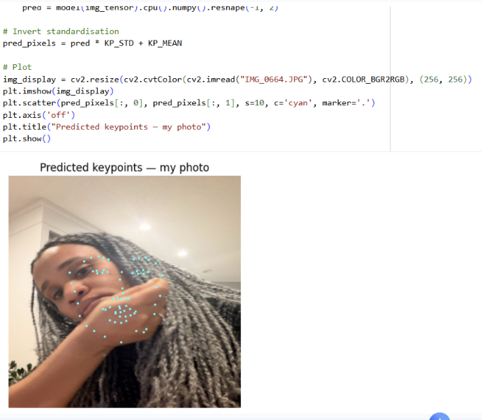

Facial keypoint detection with transfer learning
Computer vision lab (CMPT 3520): teaching a pre-trained image model to find 68 landmarks on a face.
The problem
Many face tools, such as filters, alignment and accessibility features, start by locating points on the face. The task was to predict the x and y position of 68 landmarks from a face image, reusing a network trained on millions of general photos instead of training one from scratch.
My role
I ran the lab notebook on my own machine, fixed the dataset download problem, chose and explained the design of the regression head, and tested the finished model on a photo of myself.
What I did
- Loaded a public Kaggle face-keypoint dataset and prepared the images (256×256, normalised with the ImageNet statistics the backbone expects).
- Froze the ResNet-18 backbone and replaced its final layer with a regression head: two hidden layers (512 and 256 units) with batch normalisation and dropout, ending in 136 outputs with no activation.
- Trained only the head with mean squared error loss and the Adam optimiser, and tracked train and test RMSE each epoch.
- Saved the model, reloaded it into a fresh network, and confirmed it gave the same test error.
- Tested it on a photo of my own.
What I found

Train and test error fell together over the epochs.

Predicted landmarks on test images.

On my own photo, the points shifted because the face is small in the frame.
Train and test error fell together with a small gap, so the model was not overfitting. It was limited by the frozen backbone, whose features were built for general objects and not faces. Unfreezing the last block with a much smaller learning rate would be the next step to try.
On my own photo the predictions were noticeably worse than on the test set. My photo showed the face small in the frame with lots of background, while the training images were tightly cropped, so the points shifted away from the real landmarks.
Responsible AI and limits
- Privacy: I used a public dataset and my own photo.
- Generalisation: I tested on one photo, so I cannot say how well the model works across different faces, lighting, poses or image framing.
- Not recognition: the model locates landmarks. It does not identify anyone, and it should not be presented as doing so.
- Preprocessing risk: skipping the ImageNet normalisation shifts the frozen filters outside the range they were trained on and degrades the results.
What I would improve
Crop faces automatically before prediction, test on a wider set of photos, and compare the frozen version with a partly unfrozen one.